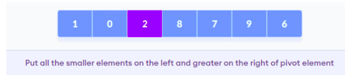
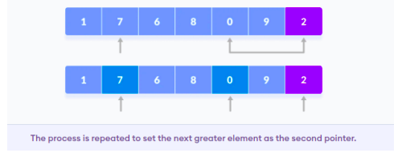

Implementation
Quicksort is a sorting algorithm based on the divide and conquer approach
where
Step 1 : An array is divided into subarrays by selecting a pivot element
(element selected from the array).
While dividing the array, the pivot element should be positioned in such a way that elements less than pivot are kept on the left side and elements greater than pivot are on the right side of the pivot.
Step 2 : The left and right subarrays are also divided using the same approach.
This process continues until each subarray contains a single element.
Step 3 : At this point, elements are already sorted. Finally, elements are combined to form a sorted array.
While dividing the array, the pivot element should be positioned in such a way that elements less than pivot are kept on the left side and elements greater than pivot are on the right side of the pivot.
Step 2 : The left and right subarrays are also divided using the same approach.
This process continues until each subarray contains a single element.
Step 3 : At this point, elements are already sorted. Finally, elements are combined to form a sorted array.
- Selecting a pivot element, in this case we are selecting tthe rightmost element of the array as pivot element.
- Now the elements of the array are rearranged so that elements that are smaller than the pivot are put on the left and the elements greater than the pivot are put on the right.
- A pointer is fixed at the pivot element. The pivot element is compared with the elements beginning from the first index.
- If the element is greater than the pivot element, a second pointer is set for that element.
- Now, pivot is compared with other elements. If an element smaller than the pivot element is reached, the smaller element is swapped with the greater element found earlier.
- Again, the process is repeated to set the next greater element as the second pointer. And, swap it with another smaller element.
- The process goes on until the second last element is reached.
- Finally, the pivot element is swapped with the second pointer.
- Pivot elements are again chosen for the left and the right sub-parts separately. And, step 2 is repeated.
- The subarrays are divided until each subarray is formed of a single element. At this point, the array is already sorted.

